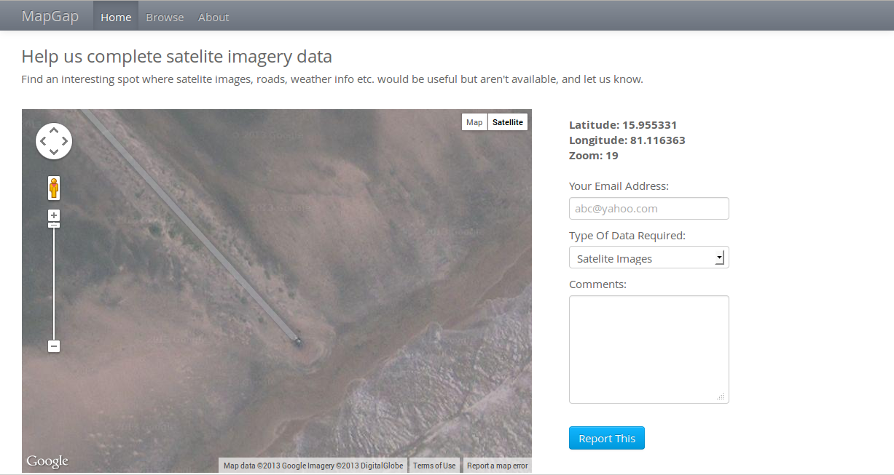
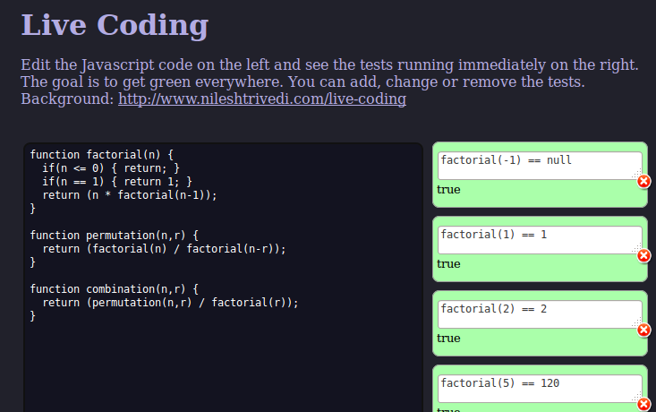

I started programming in 1999 at IIT Kharagpur. Starting with C, I finished many projects with Java and Javascript before discovering and falling in love with Ruby. I co-founded a B2B startup (YouSuggest.us which was a social CRM app) and learnt a lot. The companies I have worked with include GupShup, YouSuggest, HeadStrong among others. My skills range from web & mobile apps to electronics hardware to hard math like machine learning or algorithmic trading to topics like syllogisms, linguistics, aerodynamics and mathematics behind music theory. My resume is here.
You can contact me via Twitter.
Physics

I made a physics playground app for the browser, which involved vector math, Runge-Kutta integration, impulse-based constraint solver and drawing with HTML5 Canvas API. I gave a tech talk about this at JSFoo 2013.
Javascript, Canvas API, Mozilla PersonaGupShup

I was tech lead with them from 2009 to 2013, building the enterprise platform serving 35 million users and sending out 2 billion messages every month.
Ruby, Rails, Android, Facebook APIMapGap
I made this app at NASA Space Apps Challenge at Delhi in April 2013. It allows you to submit spots in the planet to NASA where satelite imagery is needed but missing.
Ruby, Sinatra, MongoDB & Google Maps APIBugRoulette
I made this app for events like Pullathon. It lets you randomly browse open issues from GitHub repositories that you follow.
Ruby, Sinatra, GitHub, OAuthLive Coding
Inspired from Bret Victor's famous talk, I made this prototype for live coding. The idea is that as you code, the tests are run automatically and their status is immediately visible to the programmer.
Javascriptvalidated_arguments

This gem allows one to use ActiveModel to validate arguments for any Ruby method.
Rubyeav_presenter
ActiveRecord like presenter model for the Entity-Value-Attribute design pattern.
Ruby, Rails